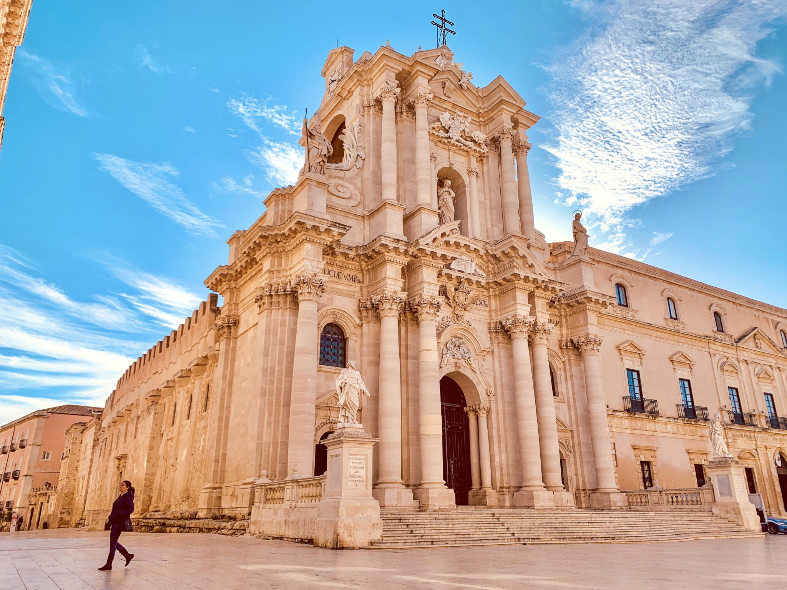

Siracusa — La scenografia di luce bianca sull'isola di Ortigia.
Caratterizzata da una pianta semicircolare e pavimentata in candida pietra calcarea, questa piazza è considerata uno dei salotti urbani più belli d'Europa.

Un tempio unico al mondo: la straordinaria facciata barocca nasconde la struttura originale del Tempio dorico di Atena del V secolo a.C., le cui monumentali colonne sono tuttora visibili all'interno.
Sede del municipio cittadino, l'edificio mostra la fusione perfetta tra geometrie rinascimentali al piano inferiore e decorazioni barocche al piano superiore, firmate dal geniale architetto Vermexio.
Una delle dimore gentilizie più raffinate dell'isola. Il palazzo si distingue per il suo cortile interno scenografico, arricchito da un eccezionale pavimento in acciottolato bianco e nero.
Situata all'estremità della piazza, questa chiesa vanta una splendida facciata slanciata e custodisce (a periodi) preziosi capolavori d'arte legati alla patrona della città di Siracusa.